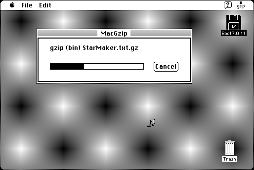

Download
MacGzip_68K_1.1.3.zip (156K) MacGZip 1.1.3 repackaged into a zipped hfs disk image and checksum file. The disk image can be mounted with Mini vMac.
MacGzip_68K_1.1.3.sit (152K) MacGZip 1.1.3 in the original format.
copyright: SPDsoft
mod date: Sep 14, 1999
license: GPL
from url :
MacGzip Home Page
Macintosh port of Jean-loup Gailly’s gzip. Compresses single files and uncompresses. This format is common on Unix systems, usually combined with the “tar” format for archiving multiple files. MacGZip does not include handling of “tar” format, a separate program is needed, such as MacTar. It can preserve the extra information of a Macintosh file with MacBinary, but this format is not portable. Requires at least System 7. Source code is available (below).

Download source
MacGzip_1.1.3_src_c.zip (471K) MacGZip 1.1.3 source in the original format.
MacGzip_1.1.3_src_c.sit (471K) MacGZip 1.1.3 source in the original format.
If you find these downloads useful, please consider helping the Gryphel Project, which hosts them.
Here are the md5 checksums for the downloads, signed with Gryphel Key 5:
--------- GRY SIGNED TEXT --------- 66eabb5ba7b0a84e2422fc7ec6fb3cb7 MacGzip_68K_1.1.3.zip 675606550ebca19ca066faf7db72894c MacGzip_68K_1.1.3.sit 48fd3d057bdca7e64a852d6b2939f5e2 MacGzip_1.1.3_src_c.zip 178ab9c743ffa823a82d9ae7134dfcb0 MacGzip_1.1.3_src_c.sit ------- BEGIN GRY SIGNATURE ------- Gry/4Xa8CFcUzxdN/I/DoVA6ipENOSk9/aCpAi76rXfMu/+4e6inyYDnHtx7cxFi bCxVJeaxwWI4ZiruwI1EIzqj8UMsi0senRfF+nUHGuFYIBKJ3s5ES47ZSkI/FaD0 HnJ6yivr3tmI/8l7qcR+u7DBEfnUiDAKMEbbHW94QZn/zhAlKArDbh6b5exaqoXU -------- END GRY SIGNATURE --------